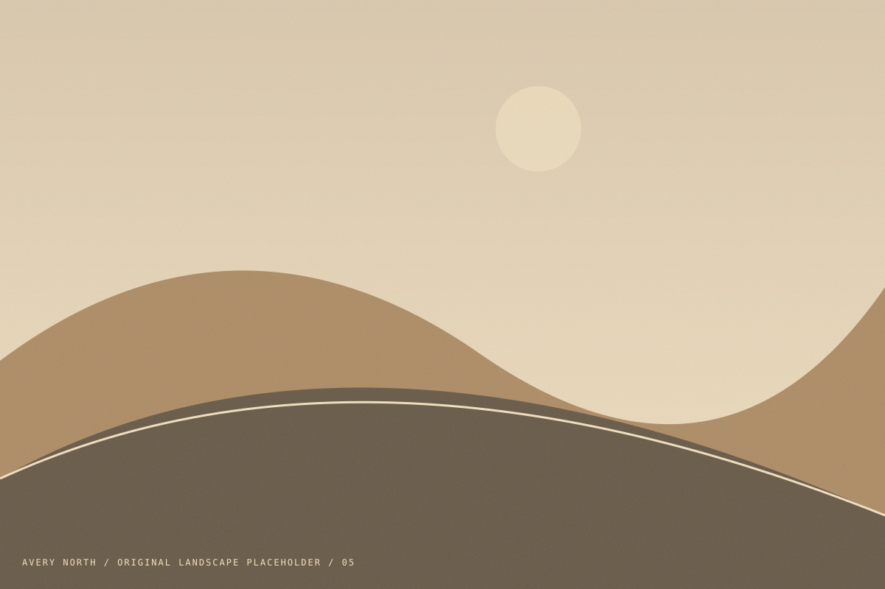

Find the story
Identify what the place means to the brief, what should feel personal, and what should remain open to discovery.
Personal / 2025
The journey is part of the story.

The journey is part of the story.
A personal-project concept about the in-between moments: the unmarked stop, a bend in the road, and the light that makes you look again.
The sequence moves from a wide sense of place toward quieter details, then opens out again. It is a study in rhythm: a pause between frames, a change of scale, and a reason to keep looking.
Every image on this page is an original illustrated placeholder. No real trip, client commission, or photographic result is claimed.
Identify what the place means to the brief, what should feel personal, and what should remain open to discovery.
Look for a useful relationship between scale, weather, and human presence. Leave room for the unexpected frame.
Arrange the images so that each adds something. Keep a change of pace between the wide views and the small moments.
This is a demonstration portfolio. Use the inquiry form to test a licensing workflow, but no license or real booking is created.
Bring a place, a question, or the beginning of an idea.